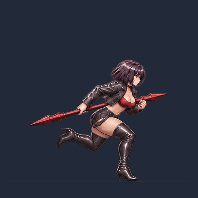
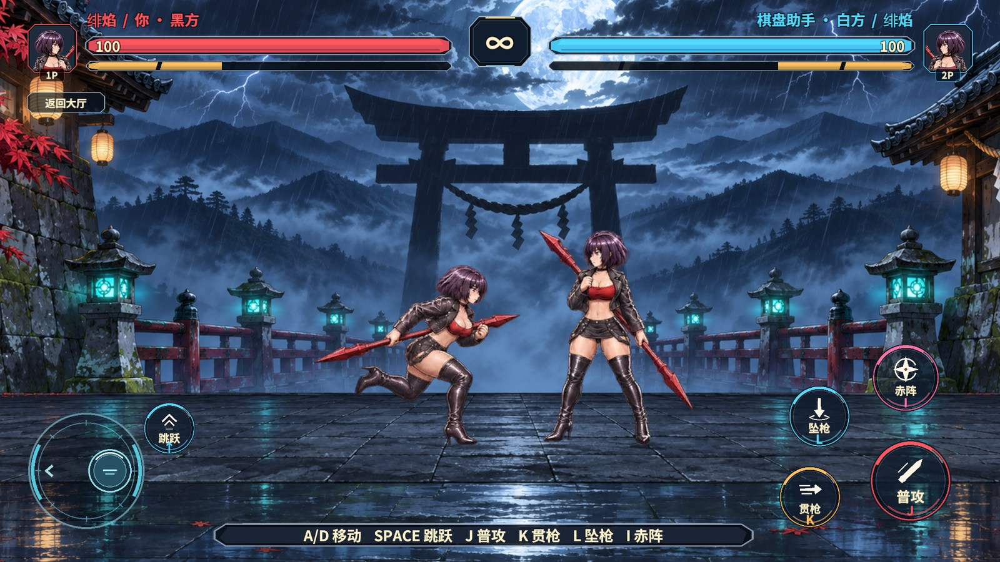
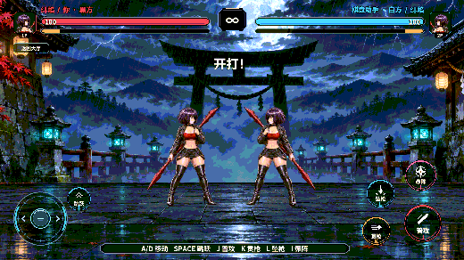

绯焰的八帧跑步循环
参考视频约 00:37 的低身前冲，绯焰压低重心，红枪沿腰线向后拖，左右脚交替落地。内置 ImageGen 一次生成整套原画。八张切片沿同一腰部横轴与地面基准摆放，腾空时保留鞋底与地面的距离。动作参考视频

Unity 接入与实战验收
旧跑动由两张同侧抬腿图交替。新片段从落脚、压重、蹬地到腾空走完一只脚，再切换另一只脚。运行时按实际帧数回绕，片段去掉了重复的尾帧。两席引用同一套 400×400 Sprite，左跑通过原有镜像显示。
| 检查 | 实测结果 |
|---|---|
| 图集与引用 | RevCLI 用 game.pvp.duel-sprites 同步现有场景和动画片段。game.pvp.duel-atlas 校验两席顺序与居中轴心，StandaloneWindows64 的内置图集共 63 张 Sprite、两页。 |
| 正式对局跑动 | 经 HUD 摇杆驱动权威横移。向左、向右均显示 Ember_32 → … → Ember_39 → Ember_32，尾帧显示约 61～67 毫秒，松开后坐标停止更新并回到 Ember_00。 |
| 退出重进 | Unity 2022.3.15f1c1 Windows Editor 开启真实 AB。首次从大厅进入，离开决斗后再次进入并复测。重进后两个方向各一圈实测约 0.533 秒，运行期错误计数为 0。 |
RevMCP 通过 rev_discover 发现 Editor 和运行期动作，rev_call editor.play 从大厅启动。rev_run 使用 围棋对战/本地人机决斗、围棋对战/暂停决斗敌人AI（参数 1）和临时跑步探针执行两轮断言，最后回大厅并退出 Play。探针从工程移除后重新编译。决斗角色由场景自带的 Sprite Atlas V2 交付，Revolution 的场景流程和自动化支持了加载及验证。


本次验收覆盖 Unity Editor 本地人机决斗。独立 Player、联机对局和手机尚未复测。
原画与生成提示词
原画保存在项目的 PvpArcade 原版美术目录。透明跑步原画

查看最终 ImageGen 提示词
Use case: stylized-concept Asset type: production 2D hand-painted fighting-game sprite sheet, one eight-drawing loop of the existing adult woman Ember running with her spear. Inputs: image 1 is the actual in-game standing Ember and is the identity, hair, costume, face, skin and paint reference. Image 2 is the actual in-game old run sprite and is a clothing and spear-design reference. Image 3 is the exact new stride and relative root-position reference. Trace its pose geometry, but render the full existing character and outfit. Orange marks the camera-near leg, blue the camera-far leg. Do not reproduce any diagram, lines, diagram colors, captions or guides. Do not copy a still frame repeatedly. Motion direction from the combat-video reference: compact, quick arcade rush. The hips sit low and the whole chest leans distinctly forward by about 35 degrees from vertical. Her chin travels ahead of her hips. The free hand is held close in front of the chest. One consistent straight crimson double-pointed spear trails a long way to screen left behind her, angled up only about 13–15 degrees toward the right. Hold the shaft in the same rear hand near the hip throughout. Both visible spearheads must be present, sharp, aligned on the same single straight shaft, and unchanged in scale across the sheet. No attack or weapon swing. Minimal head and shoulder bob, slight boot and knee recoil. Render precisely EIGHT complete sprites, 4 equal square columns by 2 equal rows on one 2:1 landscape PNG with an actual TRANSPARENT BACKGROUND (zero alpha in every gutter, all blank areas and holes between legs, all negative spaces, all outer margins; fully opaque interiors; clean antialiased silhouette only). Absolutely no ground, grey/white haze, drop shadow, matte fringe, glow, border, text, separators, graphic symbols, checkerboard or background. Plenty of blank clearance around every sprite, no clipping at cell edges. Only her silhouette and spear. The same fixed camera and pixels-per-body-unit in all eight cells. No advancing across the cells: her hips center near 49 percent of each cell width, and the common floor is near 92 percent of each cell height. The feet touch that floor on contacts and push-offs, both clear it by a short height on flight. Do not vertically recenter poses to compensate for the airtime. Row-major chronology: 1 near boot planted in front, far heel folds behind; 2 near boot supports weight beneath the hips while far knee begins its swing; 3 near boot pushes down/back from toe while far knee rises and passes in front; 4 short flight with near boot trailing and far boot reaching down/forward; 5 far boot strikes ahead in front and near boot folds behind; 6 far boot supports weight beneath the hips while near knee begins its swing; 7 far boot pushes down/back and near knee rises and passes it; 8 short flight with far boot trailing and near boot reaching down/forward just before pose 1. Distinguish the near leg through its brighter leather specular edge and clear overlap of the near thigh. The far leg is shaded darker and naturally partially obscured. Thus the top-left two front/supporting boots are brighter, the top-right two front/recovering boots are darker, the bottom-left two front/supporting boots are darker, and the bottom-right two front/recovering boots are brighter. The two rows must physically swap the leading leg, with visible overlap differences even at small game scale. Ensure the recoveries trace a continuous shape and the final frame naturally leads into the first. Stay faithful to the same adult athletic woman in every frame: plum-black short bob and eyes, black choker, short fitted black leather jacket, red top, belted black shorts with straps, black leather high heel over-the-knee boots, subtle natural waist contour. Match the hand-painted semi-realistic anime fighter sprite, cool leather highlights, dark fine outlines, same proportions and brightness as reference. Face right in all eight frames.